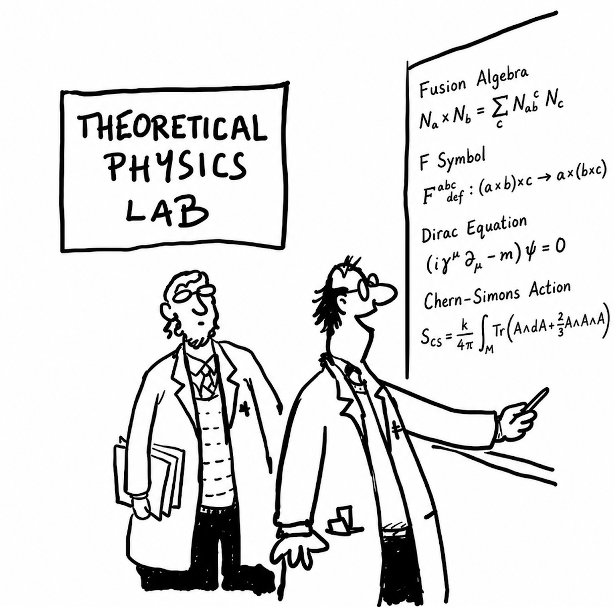
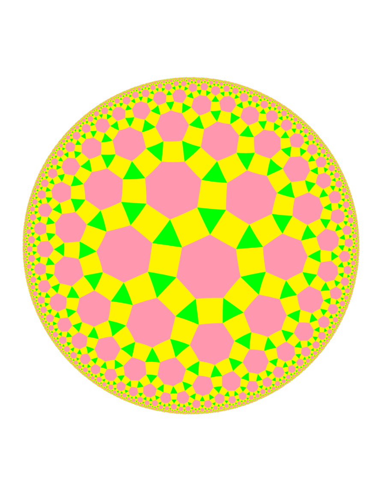

Seminars
This is a page for talks and seminars in our group, if you would like to give a talk, contact me via email: giannjia@foxmail.com or jiatqft@gmail.com.
The topics include mathematical physics, theoretical physics, quantum information, quantum computation, and related fields in physics and mathematics. We also welcome talks on other topics if they are interesting and related to our research.
You could also check our group homepage link for more details.
Talks in 2026
-

Abstract: Recently, the notion of symmetry has been generalized, including high form, subsystem, and noninvertible symmetries. These novel symmetries have extended our understanding of topological phases of matter. In this talk, I will review the recent development on generalized symmetry, with a focus on noninvertible symmetry and the phases protected by it. I will present a general method to classy a broad class of noninvertible symmetry protected topological phases (NISPTs), together with concrete lattice realizations. Finally I will show that NISPT is a natural platform to exhibit the connection between noninvertibility and entanglement.
About the Speaker: Dr. Weiguang Cao received his Ph.D. from the University of Tokyo. After graduation, he conducted postdoctoral research at the Center for Quantum Mathematics, University of Southern Denmark. His research interests focus on understanding challenging problems in condensed-matter many-body systems from the perspective of symmetry, such as the classification of topological phases. His recent research mainly centers on irreversible symmetry within generalized symmetries and its applications in condensed matter physics and quantum information.